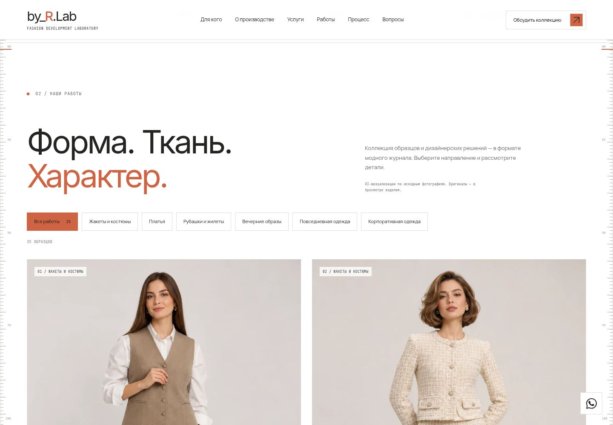
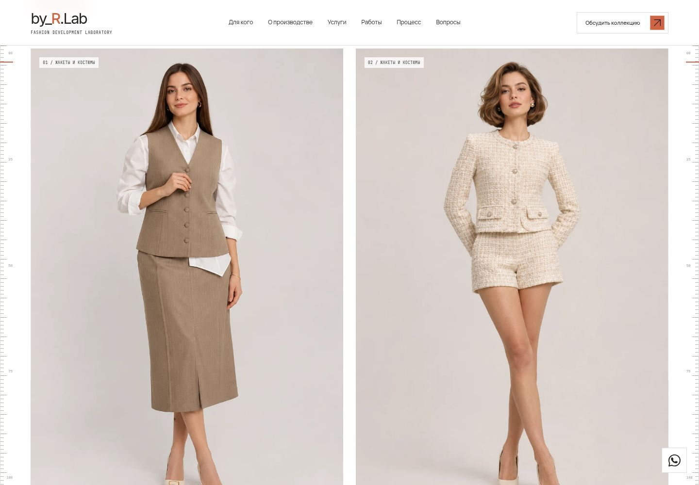
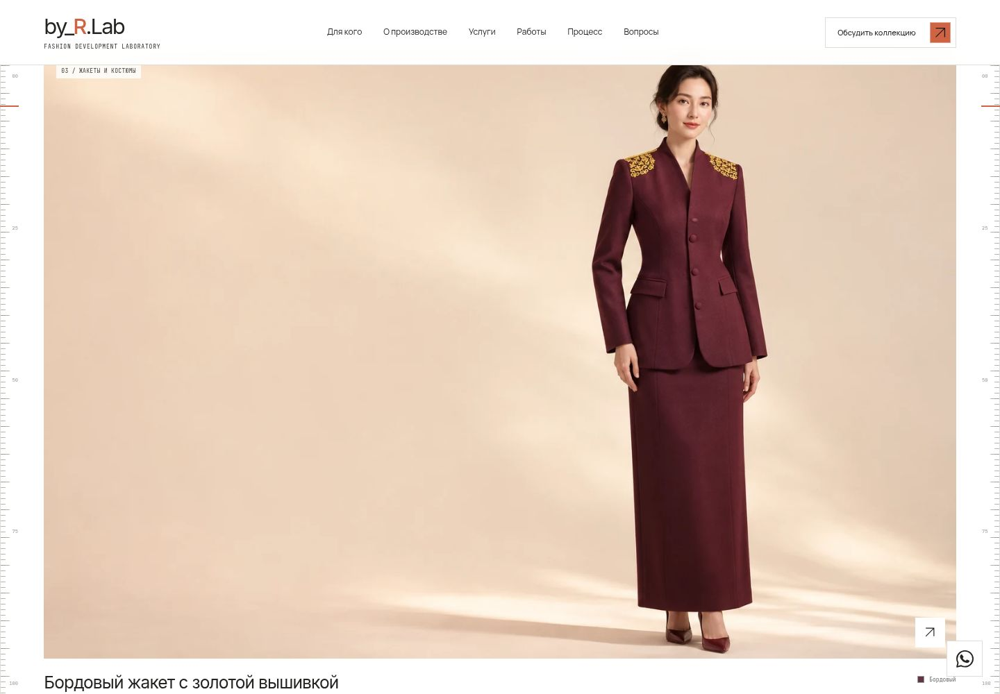
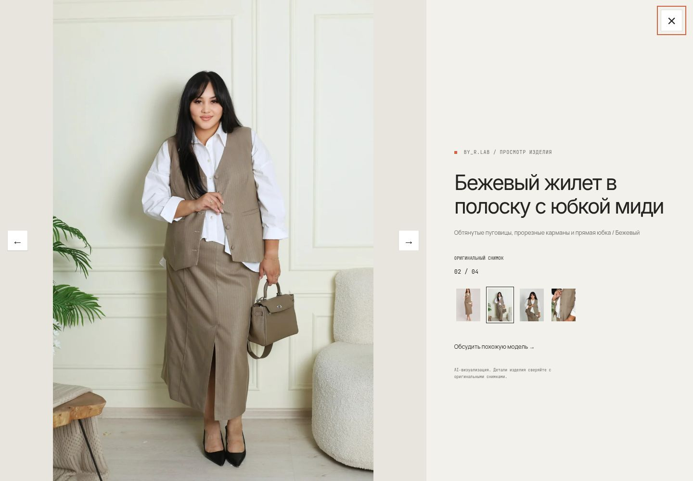
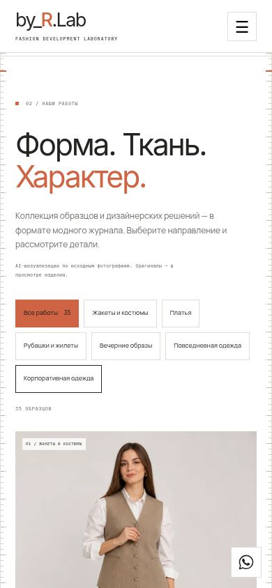
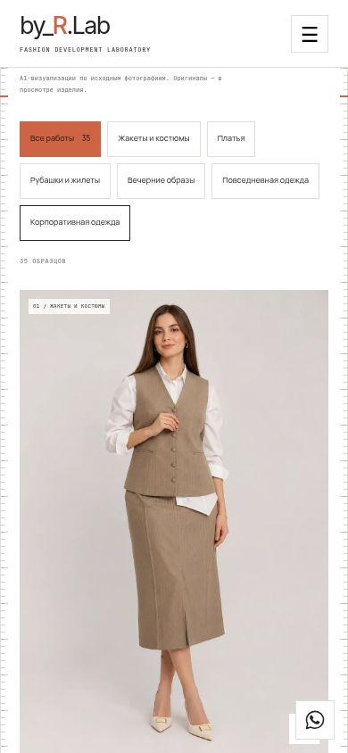
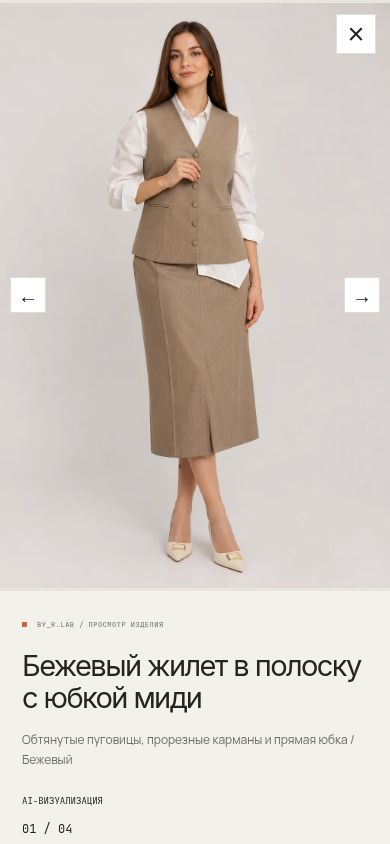

Рабочий preview для проверки: 35 отдельных образцов, журнальная сетка, фильтры, полноэкранный просмотр и запрос в WhatsApp. Hero и швейные линейки сохранены.







Проверены семь ширин от 360 до 1920 px, все категории, 80 файлов изображений, просмотр с клавиатуры, Escape и возврат фокуса. Ошибок JavaScript, неработающих ссылок на фотографии и горизонтального переполнения не обнаружено. Форма WhatsApp, FAQ, меню и услуги работают. Полная сводка — в JSON.
AI-кадры — редакционные интерпретации. Производственные детали и фирменную вышивку сверяйте с исходниками. Новая серия из 50 готовых AI-фото не заявляется. Текущий акцент по-прежнему взят из доступного прежнего логотипа; новый логотип как скачиваемый исходник ещё не получен.